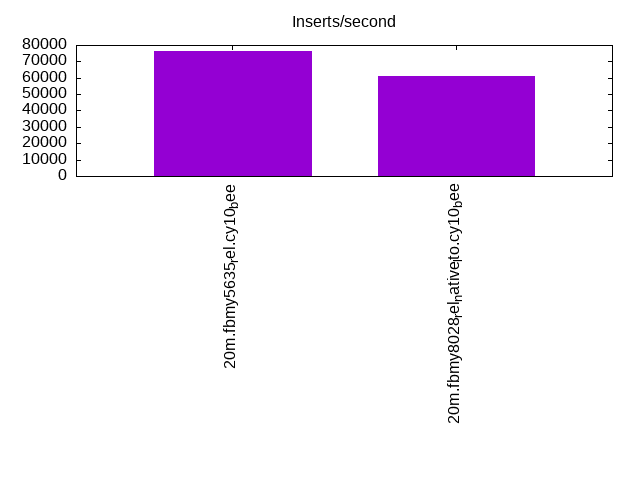
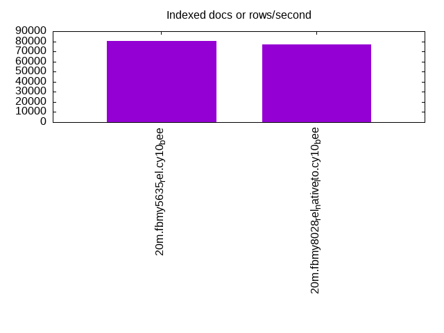
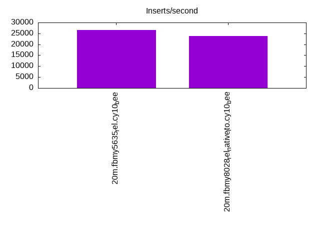
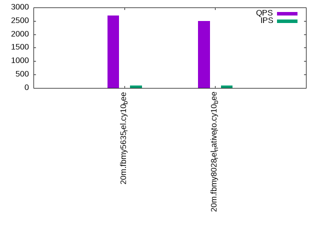
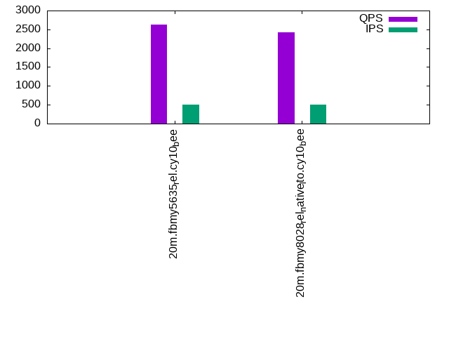
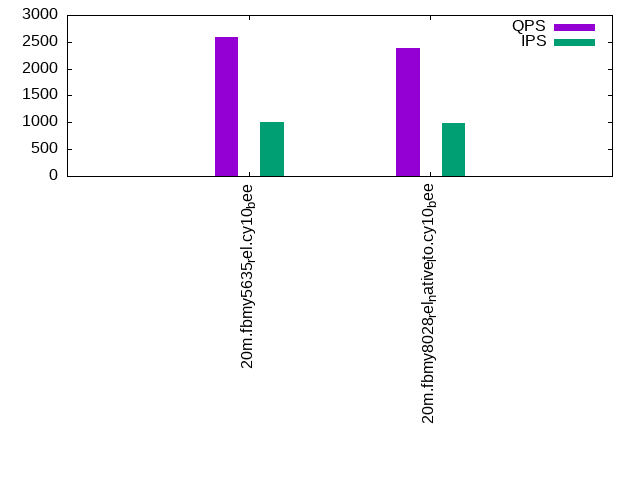

This is a report for the insert benchmark with 20M docs and 1 client(s). It is generated by scripts (bash, awk, sed) and Tufte might not be impressed. An overview of the insert benchmark is here and a short update is here. Below, by DBMS, I mean DBMS+version.config. An example is my8020.c10b40 where my means MySQL, 8020 is version 8.0.20 and c10b40 is the name for the configuration file.
The test server has 8 AMD cores, 16G RAM and an NVMe SSD. It is described here as the Beelink. The benchmark was run with 1 client and there were 1 or 3 connections per client (1 for queries or inserts without rate limits, 1+1 for rate limited inserts+deletes). It uses 1 table. It loads 20M rows per table without secondary indexes, creates secondary indexes, then inserts 50M rows per table with a delete per insert to avoid growing the table. It then does 3 read+write tests for 1800s each that do queries as fast as possible with 100, 500 and then 1000 inserts/second/client concurrent with the queries and 1000 deletes/second to avoid growing the table. The database is cached by the storage engine and the only IO is for writes. Clients and the DBMS share one server. The per-database configs are in the per-database subdirectories here.
The tested DBMS are:
The numbers are inserts/s for l.i0 and l.i1, indexed docs (or rows) /s for l.x and queries/s for q*.2. The values are the average rate over the entire test for inserts (IPS) and queries (QPS). The range of values for IPS and QPS is split into 3 parts: bottom 25%, middle 50%, top 25%. Values in the bottom 25% have a red background, values in the top 25% have a green background and values in the middle have no color. A gray background is used for values that can be ignored because the DBMS did not sustain the target insert rate. Red backgrounds are not used when the minimum value is within 80% of the max value.
| dbms | l.i0 | l.x | l.i1 | q100.1 | q500.1 | q1000.1 |
|---|---|---|---|---|---|---|
| 20m.fbmy5635_rel.cy10_bee | 76628 | 80723 | 26667 | 2703 | 2634 | 2595 |
| 20m.fbmy8028_rel_native_lto.cy10_bee | 61162 | 77011 | 23866 | 2501 | 2423 | 2387 |
This table has relative throughput, throughput for the DBMS relative to the DBMS in the first line, using the absolute throughput from the previous table.
| dbms | l.i0 | l.x | l.i1 | q100.1 | q500.1 | q1000.1 |
|---|---|---|---|---|---|---|
| 20m.fbmy5635_rel.cy10_bee | 1.00 | 1.00 | 1.00 | 1.00 | 1.00 | 1.00 |
| 20m.fbmy8028_rel_native_lto.cy10_bee | 0.80 | 0.95 | 0.89 | 0.93 | 0.92 | 0.92 |
This lists the average rate of inserts/s for the tests that do inserts concurrent with queries. For such tests the query rate is listed in the table above. The read+write tests are setup so that the insert rate should match the target rate every second. Cells that are not at least 95% of the target have a red background to indicate a failure to satisfy the target.
| dbms | q100.1 | q500.1 | q1000.1 |
|---|---|---|---|
| fbmy5635_rel.cy10_bee | 100 | 498 | 997 |
| fbmy8028_rel_native_lto.cy10_bee | 99 | 498 | 996 |
| target | 100 | 500 | 1000 |
l.i0: load without secondary indexes. Graphs for performance per 1-second interval are here.
Average throughput:
Insert response time histogram: each cell has the percentage of responses that take <= the time in the header and max is the max response time in seconds. For the max column values in the top 25% of the range have a red background and in the bottom 25% of the range have a green background. The red background is not used when the min value is within 80% of the max value.
| dbms | 256us | 1ms | 4ms | 16ms | 64ms | 256ms | 1s | 4s | 16s | gt | max |
|---|---|---|---|---|---|---|---|---|---|---|---|
| fbmy5635_rel.cy10_bee | 99.866 | 0.130 | 0.004 | 0.001 | 0.071 | ||||||
| fbmy8028_rel_native_lto.cy10_bee | 99.732 | 0.194 | 0.072 | 0.002 | 0.084 |
Performance metrics for the DBMS listed above. Some are normalized by throughput, others are not. Legend for results is here.
ips qps rps rmbps wps wmbps rpq rkbpq wpi wkbpi csps cpups cspq cpupq dbgb1 dbgb2 rss maxop p50 p99 tag 76628 0 0 0.0 36.6 13.0 0.000 0.000 0.000 0.174 7565 21.8 0.099 23 0.7 1.8 0.2 0.071 77312 70419 20m.fbmy5635_rel.cy10_bee 61162 0 0 0.0 37.4 11.9 0.000 0.000 0.001 0.199 6323 21.5 0.103 28 0.7 1.9 0.6 0.084 61430 55163 20m.fbmy8028_rel_native_lto.cy10_bee
l.x: create secondary indexes.
Average throughput:
Performance metrics for the DBMS listed above. Some are normalized by throughput, others are not. Legend for results is here.
ips qps rps rmbps wps wmbps rpq rkbpq wpi wkbpi csps cpups cspq cpupq dbgb1 dbgb2 rss maxop p50 p99 tag 80723 0 0 0.0 31.7 12.3 0.000 0.000 0.000 0.156 252 11.6 0.003 11 1.5 2.5 1.3 0.009 NA NA 20m.fbmy5635_rel.cy10_bee 77011 0 0 0.0 29.9 11.7 0.000 0.000 0.000 0.156 427 11.6 0.006 12 1.4 2.7 1.9 0.010 NA NA 20m.fbmy8028_rel_native_lto.cy10_bee
l.i1: continue load after secondary indexes created. Graphs for performance per 1-second interval are here.
Average throughput:
Insert response time histogram: each cell has the percentage of responses that take <= the time in the header and max is the max response time in seconds. For the max column values in the top 25% of the range have a red background and in the bottom 25% of the range have a green background. The red background is not used when the min value is within 80% of the max value.
| dbms | 256us | 1ms | 4ms | 16ms | 64ms | 256ms | 1s | 4s | 16s | gt | max |
|---|---|---|---|---|---|---|---|---|---|---|---|
| fbmy5635_rel.cy10_bee | 99.807 | 0.188 | 0.003 | 0.002 | 0.077 | ||||||
| fbmy8028_rel_native_lto.cy10_bee | 99.680 | 0.255 | 0.061 | 0.003 | 0.103 |
Delete response time histogram: each cell has the percentage of responses that take <= the time in the header and max is the max response time in seconds. For the max column values in the top 25% of the range have a red background and in the bottom 25% of the range have a green background. The red background is not used when the min value is within 80% of the max value.
| dbms | 256us | 1ms | 4ms | 16ms | 64ms | 256ms | 1s | 4s | 16s | gt | max |
|---|---|---|---|---|---|---|---|---|---|---|---|
| fbmy5635_rel.cy10_bee | 99.800 | 0.192 | 0.007 | 0.002 | 0.077 | ||||||
| fbmy8028_rel_native_lto.cy10_bee | 99.670 | 0.260 | 0.067 | 0.003 | 0.111 |
Performance metrics for the DBMS listed above. Some are normalized by throughput, others are not. Legend for results is here.
ips qps rps rmbps wps wmbps rpq rkbpq wpi wkbpi csps cpups cspq cpupq dbgb1 dbgb2 rss maxop p50 p99 tag 26667 0 18 0.5 101.2 39.2 0.001 0.019 0.004 1.507 11177 44.0 0.419 132 2.4 4.2 5.3 0.077 26620 23973 20m.fbmy5635_rel.cy10_bee 23866 0 18 0.4 98.8 36.4 0.001 0.019 0.004 1.562 10354 43.1 0.434 144 2.3 4.3 5.7 0.103 23786 21433 20m.fbmy8028_rel_native_lto.cy10_bee
q100.1: range queries with 100 insert/s per client. Graphs for performance per 1-second interval are here.
Average throughput:
Query response time histogram: each cell has the percentage of responses that take <= the time in the header and max is the max response time in seconds. For max values in the top 25% of the range have a red background and in the bottom 25% of the range have a green background. The red background is not used when the min value is within 80% of the max value.
| dbms | 256us | 1ms | 4ms | 16ms | 64ms | 256ms | 1s | 4s | 16s | gt | max |
|---|---|---|---|---|---|---|---|---|---|---|---|
| fbmy5635_rel.cy10_bee | 2.513 | 97.485 | 0.002 | 0.003 | |||||||
| fbmy8028_rel_native_lto.cy10_bee | 3.053 | 96.945 | 0.002 | 0.003 |
Insert response time histogram: each cell has the percentage of responses that take <= the time in the header and max is the max response time in seconds. For max values in the top 25% of the range have a red background and in the bottom 25% of the range have a green background. The red background is not used when the min value is within 80% of the max value.
| dbms | 256us | 1ms | 4ms | 16ms | 64ms | 256ms | 1s | 4s | 16s | gt | max |
|---|---|---|---|---|---|---|---|---|---|---|---|
| fbmy5635_rel.cy10_bee | 99.472 | 0.528 | 0.015 | ||||||||
| fbmy8028_rel_native_lto.cy10_bee | 99.361 | 0.583 | 0.056 | 0.023 |
Delete response time histogram: each cell has the percentage of responses that take <= the time in the header and max is the max response time in seconds. For max values in the top 25% of the range have a red background and in the bottom 25% of the range have a green background. The red background is not used when the min value is within 80% of the max value.
| dbms | 256us | 1ms | 4ms | 16ms | 64ms | 256ms | 1s | 4s | 16s | gt | max |
|---|---|---|---|---|---|---|---|---|---|---|---|
| fbmy5635_rel.cy10_bee | 71.944 | 27.639 | 0.417 | 0.023 | |||||||
| fbmy8028_rel_native_lto.cy10_bee | 99.056 | 0.917 | 0.028 | 0.018 |
Performance metrics for the DBMS listed above. Some are normalized by throughput, others are not. Legend for results is here.
ips qps rps rmbps wps wmbps rpq rkbpq wpi wkbpi csps cpups cspq cpupq dbgb1 dbgb2 rss maxop p50 p99 tag 100 2703 2 0.2 5.2 0.8 0.001 0.062 0.052 7.924 10483 13.1 3.878 388 1.8 3.6 7.1 0.003 2701 2253 20m.fbmy5635_rel.cy10_bee 99 2501 1 0.2 4.7 0.5 0.000 0.091 0.047 5.414 9856 12.9 3.941 413 1.8 3.9 7.4 0.003 2477 2253 20m.fbmy8028_rel_native_lto.cy10_bee
q500.1: range queries with 500 insert/s per client. Graphs for performance per 1-second interval are here.
Average throughput:
Query response time histogram: each cell has the percentage of responses that take <= the time in the header and max is the max response time in seconds. For max values in the top 25% of the range have a red background and in the bottom 25% of the range have a green background. The red background is not used when the min value is within 80% of the max value.
| dbms | 256us | 1ms | 4ms | 16ms | 64ms | 256ms | 1s | 4s | 16s | gt | max |
|---|---|---|---|---|---|---|---|---|---|---|---|
| fbmy5635_rel.cy10_bee | 1.903 | 98.097 | nonzero | 0.002 | |||||||
| fbmy8028_rel_native_lto.cy10_bee | 1.924 | 98.075 | 0.001 | 0.003 |
Insert response time histogram: each cell has the percentage of responses that take <= the time in the header and max is the max response time in seconds. For max values in the top 25% of the range have a red background and in the bottom 25% of the range have a green background. The red background is not used when the min value is within 80% of the max value.
| dbms | 256us | 1ms | 4ms | 16ms | 64ms | 256ms | 1s | 4s | 16s | gt | max |
|---|---|---|---|---|---|---|---|---|---|---|---|
| fbmy5635_rel.cy10_bee | 99.556 | 0.444 | 0.009 | ||||||||
| fbmy8028_rel_native_lto.cy10_bee | 99.478 | 0.511 | 0.011 | 0.017 |
Delete response time histogram: each cell has the percentage of responses that take <= the time in the header and max is the max response time in seconds. For max values in the top 25% of the range have a red background and in the bottom 25% of the range have a green background. The red background is not used when the min value is within 80% of the max value.
| dbms | 256us | 1ms | 4ms | 16ms | 64ms | 256ms | 1s | 4s | 16s | gt | max |
|---|---|---|---|---|---|---|---|---|---|---|---|
| fbmy5635_rel.cy10_bee | 90.956 | 8.906 | 0.139 | 0.018 | |||||||
| fbmy8028_rel_native_lto.cy10_bee | 91.378 | 8.506 | 0.117 | 0.018 |
Performance metrics for the DBMS listed above. Some are normalized by throughput, others are not. Legend for results is here.
ips qps rps rmbps wps wmbps rpq rkbpq wpi wkbpi csps cpups cspq cpupq dbgb1 dbgb2 rss maxop p50 p99 tag 498 2634 3 0.0 5.2 0.9 0.001 0.014 0.010 1.768 10322 13.5 3.919 410 1.7 1.8 8.4 0.002 2637 2429 20m.fbmy5635_rel.cy10_bee 498 2423 3 0.0 5.8 1.1 0.001 0.006 0.012 2.168 9672 13.9 3.992 459 1.8 2.1 8.9 0.003 2413 2221 20m.fbmy8028_rel_native_lto.cy10_bee
q1000.1: range queries with 1000 insert/s per client. Graphs for performance per 1-second interval are here.
Average throughput:
Query response time histogram: each cell has the percentage of responses that take <= the time in the header and max is the max response time in seconds. For max values in the top 25% of the range have a red background and in the bottom 25% of the range have a green background. The red background is not used when the min value is within 80% of the max value.
| dbms | 256us | 1ms | 4ms | 16ms | 64ms | 256ms | 1s | 4s | 16s | gt | max |
|---|---|---|---|---|---|---|---|---|---|---|---|
| fbmy5635_rel.cy10_bee | 1.736 | 98.251 | 0.002 | 0.011 | 0.010 | ||||||
| fbmy8028_rel_native_lto.cy10_bee | 2.342 | 97.649 | 0.002 | 0.007 | 0.010 |
Insert response time histogram: each cell has the percentage of responses that take <= the time in the header and max is the max response time in seconds. For max values in the top 25% of the range have a red background and in the bottom 25% of the range have a green background. The red background is not used when the min value is within 80% of the max value.
| dbms | 256us | 1ms | 4ms | 16ms | 64ms | 256ms | 1s | 4s | 16s | gt | max |
|---|---|---|---|---|---|---|---|---|---|---|---|
| fbmy5635_rel.cy10_bee | 99.683 | 0.314 | 0.003 | 0.045 | |||||||
| fbmy8028_rel_native_lto.cy10_bee | 99.558 | 0.436 | 0.006 | 0.052 |
Delete response time histogram: each cell has the percentage of responses that take <= the time in the header and max is the max response time in seconds. For max values in the top 25% of the range have a red background and in the bottom 25% of the range have a green background. The red background is not used when the min value is within 80% of the max value.
| dbms | 256us | 1ms | 4ms | 16ms | 64ms | 256ms | 1s | 4s | 16s | gt | max |
|---|---|---|---|---|---|---|---|---|---|---|---|
| fbmy5635_rel.cy10_bee | 95.658 | 4.303 | 0.039 | 0.045 | |||||||
| fbmy8028_rel_native_lto.cy10_bee | 95.336 | 4.597 | 0.064 | 0.003 | 0.067 |
Performance metrics for the DBMS listed above. Some are normalized by throughput, others are not. Legend for results is here.
ips qps rps rmbps wps wmbps rpq rkbpq wpi wkbpi csps cpups cspq cpupq dbgb1 dbgb2 rss maxop p50 p99 tag 997 2595 9 0.3 7.7 1.9 0.004 0.107 0.008 1.911 10375 14.8 3.998 456 1.7 2.2 10.5 0.010 2590 2397 20m.fbmy5635_rel.cy10_bee 996 2387 8 0.2 7.5 1.7 0.003 0.097 0.008 1.766 9770 14.8 4.093 496 1.7 2.3 10.7 0.010 2349 2173 20m.fbmy8028_rel_native_lto.cy10_bee
l.i0: load without secondary indexes
Performance metrics for all DBMS, not just the ones listed above. Some are normalized by throughput, others are not. Legend for results is here.
ips qps rps rmbps wps wmbps rpq rkbpq wpi wkbpi csps cpups cspq cpupq dbgb1 dbgb2 rss maxop p50 p99 tag 76628 0 0 0.0 36.6 13.0 0.000 0.000 0.000 0.174 7565 21.8 0.099 23 0.7 1.8 0.2 0.071 77312 70419 20m.fbmy5635_rel.cy10_bee 61162 0 0 0.0 37.4 11.9 0.000 0.000 0.001 0.199 6323 21.5 0.103 28 0.7 1.9 0.6 0.084 61430 55163 20m.fbmy8028_rel_native_lto.cy10_bee
l.x: create secondary indexes
Performance metrics for all DBMS, not just the ones listed above. Some are normalized by throughput, others are not. Legend for results is here.
ips qps rps rmbps wps wmbps rpq rkbpq wpi wkbpi csps cpups cspq cpupq dbgb1 dbgb2 rss maxop p50 p99 tag 80723 0 0 0.0 31.7 12.3 0.000 0.000 0.000 0.156 252 11.6 0.003 11 1.5 2.5 1.3 0.009 NA NA 20m.fbmy5635_rel.cy10_bee 77011 0 0 0.0 29.9 11.7 0.000 0.000 0.000 0.156 427 11.6 0.006 12 1.4 2.7 1.9 0.010 NA NA 20m.fbmy8028_rel_native_lto.cy10_bee
l.i1: continue load after secondary indexes created
Performance metrics for all DBMS, not just the ones listed above. Some are normalized by throughput, others are not. Legend for results is here.
ips qps rps rmbps wps wmbps rpq rkbpq wpi wkbpi csps cpups cspq cpupq dbgb1 dbgb2 rss maxop p50 p99 tag 26667 0 18 0.5 101.2 39.2 0.001 0.019 0.004 1.507 11177 44.0 0.419 132 2.4 4.2 5.3 0.077 26620 23973 20m.fbmy5635_rel.cy10_bee 23866 0 18 0.4 98.8 36.4 0.001 0.019 0.004 1.562 10354 43.1 0.434 144 2.3 4.3 5.7 0.103 23786 21433 20m.fbmy8028_rel_native_lto.cy10_bee
q100.1: range queries with 100 insert/s per client
Performance metrics for all DBMS, not just the ones listed above. Some are normalized by throughput, others are not. Legend for results is here.
ips qps rps rmbps wps wmbps rpq rkbpq wpi wkbpi csps cpups cspq cpupq dbgb1 dbgb2 rss maxop p50 p99 tag 100 2703 2 0.2 5.2 0.8 0.001 0.062 0.052 7.924 10483 13.1 3.878 388 1.8 3.6 7.1 0.003 2701 2253 20m.fbmy5635_rel.cy10_bee 99 2501 1 0.2 4.7 0.5 0.000 0.091 0.047 5.414 9856 12.9 3.941 413 1.8 3.9 7.4 0.003 2477 2253 20m.fbmy8028_rel_native_lto.cy10_bee
q500.1: range queries with 500 insert/s per client
Performance metrics for all DBMS, not just the ones listed above. Some are normalized by throughput, others are not. Legend for results is here.
ips qps rps rmbps wps wmbps rpq rkbpq wpi wkbpi csps cpups cspq cpupq dbgb1 dbgb2 rss maxop p50 p99 tag 498 2634 3 0.0 5.2 0.9 0.001 0.014 0.010 1.768 10322 13.5 3.919 410 1.7 1.8 8.4 0.002 2637 2429 20m.fbmy5635_rel.cy10_bee 498 2423 3 0.0 5.8 1.1 0.001 0.006 0.012 2.168 9672 13.9 3.992 459 1.8 2.1 8.9 0.003 2413 2221 20m.fbmy8028_rel_native_lto.cy10_bee
q1000.1: range queries with 1000 insert/s per client
Performance metrics for all DBMS, not just the ones listed above. Some are normalized by throughput, others are not. Legend for results is here.
ips qps rps rmbps wps wmbps rpq rkbpq wpi wkbpi csps cpups cspq cpupq dbgb1 dbgb2 rss maxop p50 p99 tag 997 2595 9 0.3 7.7 1.9 0.004 0.107 0.008 1.911 10375 14.8 3.998 456 1.7 2.2 10.5 0.010 2590 2397 20m.fbmy5635_rel.cy10_bee 996 2387 8 0.2 7.5 1.7 0.003 0.097 0.008 1.766 9770 14.8 4.093 496 1.7 2.3 10.7 0.010 2349 2173 20m.fbmy8028_rel_native_lto.cy10_bee
Insert response time histogram
256us 1ms 4ms 16ms 64ms 256ms 1s 4s 16s gt max tag 0.000 0.000 99.866 0.130 0.004 0.001 0.000 0.000 0.000 0.000 0.071 fbmy5635_rel.cy10_bee 0.000 0.000 99.732 0.194 0.072 0.002 0.000 0.000 0.000 0.000 0.084 fbmy8028_rel_native_lto.cy10_bee
TODO - determine whether there is data for create index response time
Insert response time histogram
256us 1ms 4ms 16ms 64ms 256ms 1s 4s 16s gt max tag 0.000 0.000 99.807 0.188 0.003 0.002 0.000 0.000 0.000 0.000 0.077 fbmy5635_rel.cy10_bee 0.000 0.000 99.680 0.255 0.061 0.003 0.000 0.000 0.000 0.000 0.103 fbmy8028_rel_native_lto.cy10_bee
Delete response time histogram
256us 1ms 4ms 16ms 64ms 256ms 1s 4s 16s gt max tag 0.000 0.000 99.800 0.192 0.007 0.002 0.000 0.000 0.000 0.000 0.077 fbmy5635_rel.cy10_bee 0.000 0.000 99.670 0.260 0.067 0.003 0.000 0.000 0.000 0.000 0.111 fbmy8028_rel_native_lto.cy10_bee
Query response time histogram
256us 1ms 4ms 16ms 64ms 256ms 1s 4s 16s gt max tag 2.513 97.485 0.002 0.000 0.000 0.000 0.000 0.000 0.000 0.000 0.003 fbmy5635_rel.cy10_bee 3.053 96.945 0.002 0.000 0.000 0.000 0.000 0.000 0.000 0.000 0.003 fbmy8028_rel_native_lto.cy10_bee
Insert response time histogram
256us 1ms 4ms 16ms 64ms 256ms 1s 4s 16s gt max tag 0.000 0.000 99.472 0.528 0.000 0.000 0.000 0.000 0.000 0.000 0.015 fbmy5635_rel.cy10_bee 0.000 0.000 99.361 0.583 0.056 0.000 0.000 0.000 0.000 0.000 0.023 fbmy8028_rel_native_lto.cy10_bee
Delete response time histogram
256us 1ms 4ms 16ms 64ms 256ms 1s 4s 16s gt max tag 0.000 0.000 71.944 27.639 0.417 0.000 0.000 0.000 0.000 0.000 0.023 fbmy5635_rel.cy10_bee 0.000 0.000 99.056 0.917 0.028 0.000 0.000 0.000 0.000 0.000 0.018 fbmy8028_rel_native_lto.cy10_bee
Query response time histogram
256us 1ms 4ms 16ms 64ms 256ms 1s 4s 16s gt max tag 1.903 98.097 nonzero 0.000 0.000 0.000 0.000 0.000 0.000 0.000 0.002 fbmy5635_rel.cy10_bee 1.924 98.075 0.001 0.000 0.000 0.000 0.000 0.000 0.000 0.000 0.003 fbmy8028_rel_native_lto.cy10_bee
Insert response time histogram
256us 1ms 4ms 16ms 64ms 256ms 1s 4s 16s gt max tag 0.000 0.000 99.556 0.444 0.000 0.000 0.000 0.000 0.000 0.000 0.009 fbmy5635_rel.cy10_bee 0.000 0.000 99.478 0.511 0.011 0.000 0.000 0.000 0.000 0.000 0.017 fbmy8028_rel_native_lto.cy10_bee
Delete response time histogram
256us 1ms 4ms 16ms 64ms 256ms 1s 4s 16s gt max tag 0.000 0.000 90.956 8.906 0.139 0.000 0.000 0.000 0.000 0.000 0.018 fbmy5635_rel.cy10_bee 0.000 0.000 91.378 8.506 0.117 0.000 0.000 0.000 0.000 0.000 0.018 fbmy8028_rel_native_lto.cy10_bee
Query response time histogram
256us 1ms 4ms 16ms 64ms 256ms 1s 4s 16s gt max tag 1.736 98.251 0.002 0.011 0.000 0.000 0.000 0.000 0.000 0.000 0.010 fbmy5635_rel.cy10_bee 2.342 97.649 0.002 0.007 0.000 0.000 0.000 0.000 0.000 0.000 0.010 fbmy8028_rel_native_lto.cy10_bee
Insert response time histogram
256us 1ms 4ms 16ms 64ms 256ms 1s 4s 16s gt max tag 0.000 0.000 99.683 0.314 0.003 0.000 0.000 0.000 0.000 0.000 0.045 fbmy5635_rel.cy10_bee 0.000 0.000 99.558 0.436 0.006 0.000 0.000 0.000 0.000 0.000 0.052 fbmy8028_rel_native_lto.cy10_bee
Delete response time histogram
256us 1ms 4ms 16ms 64ms 256ms 1s 4s 16s gt max tag 0.000 0.000 95.658 4.303 0.039 0.000 0.000 0.000 0.000 0.000 0.045 fbmy5635_rel.cy10_bee 0.000 0.000 95.336 4.597 0.064 0.003 0.000 0.000 0.000 0.000 0.067 fbmy8028_rel_native_lto.cy10_bee